UX Design.
Case studies in research, product design and building, from internships, leadership roles and team projects.

Now Institute
Two websites for Morphosis Architects’ urban research wing
Designed and vibe-coded Noto Now and the Now Institute site, from research on every project to two live launches.
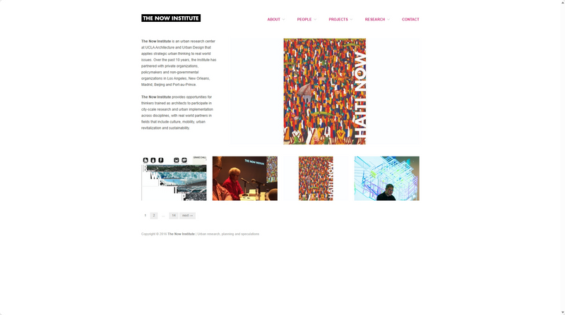
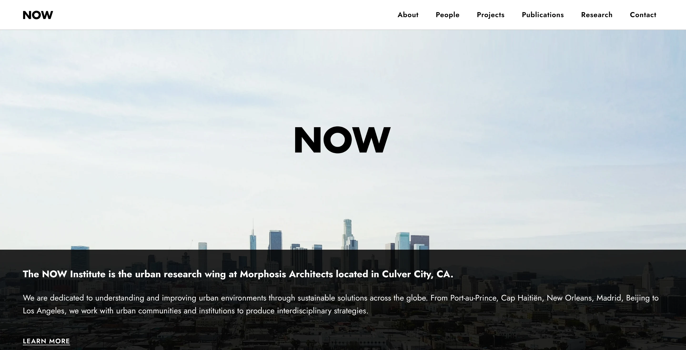
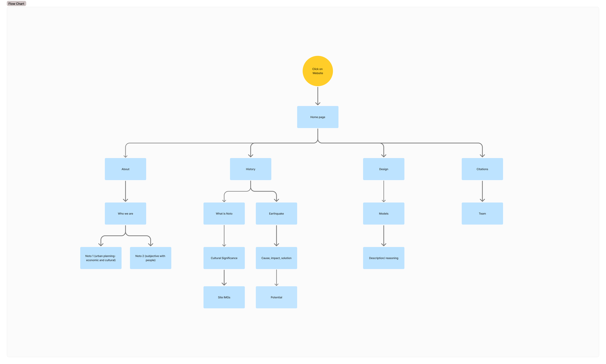

HFES STG
A website for the Sustainability Technical Group
Led a volunteer team from a 200+ member survey through card sorting, testing and launch.
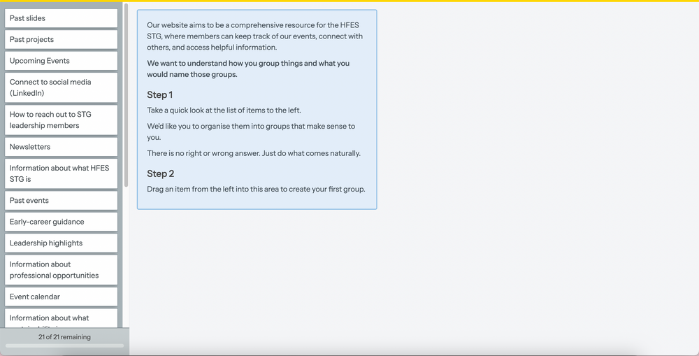
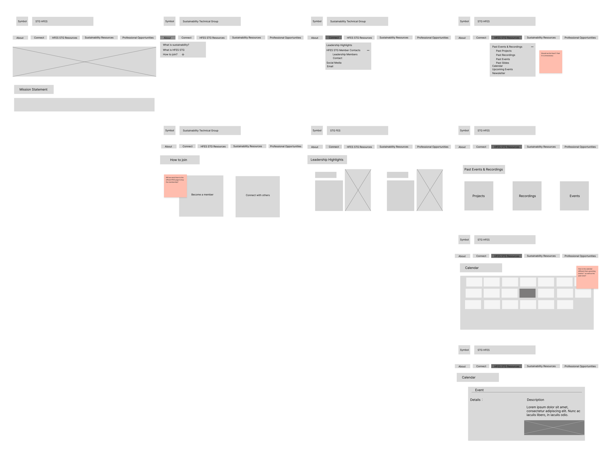
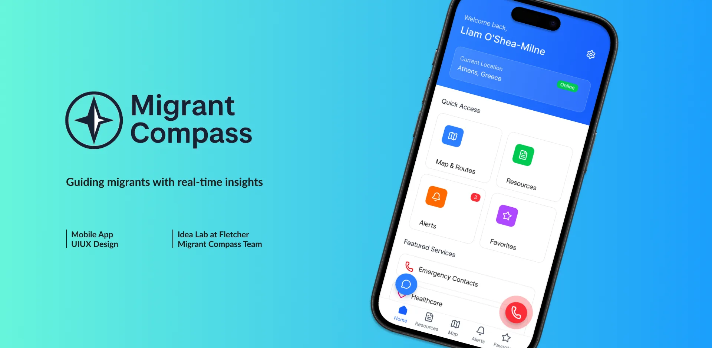
Migrant Compass
Real-time guidance for migrants
An offline-ready app giving migrants verified safety updates and resources, built at the IDEA Lab @ Fletcher.


Travel Mate
Group travel planning app
Search, shared itineraries and expenses for planning a Korea trip with friends, designed with developers.
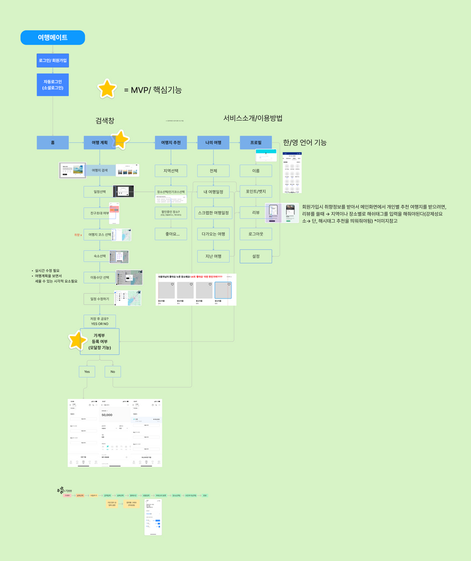
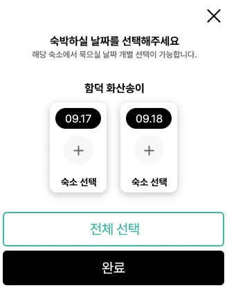
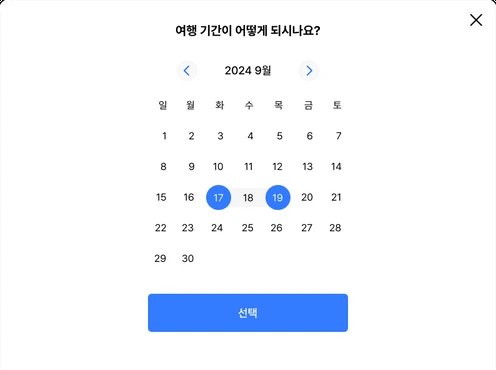
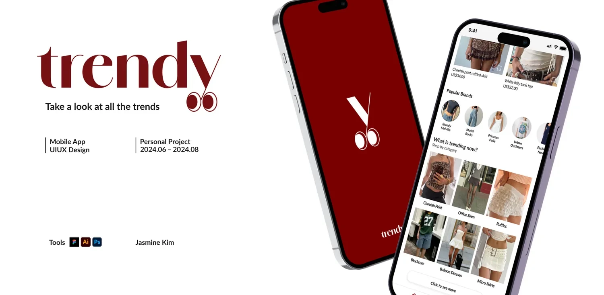
Trendy
Beauty & fashion trend app
A solo project taking a trend-shopping app from interviews and competitor research to brand and UI.
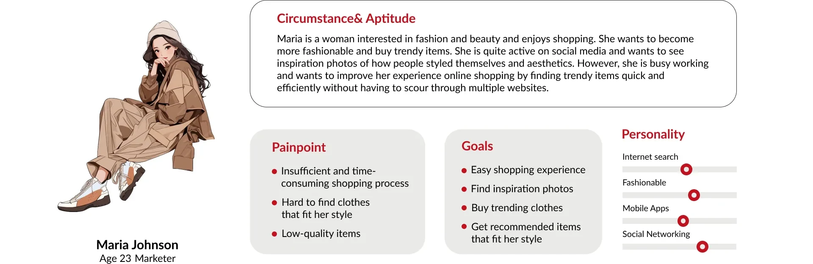
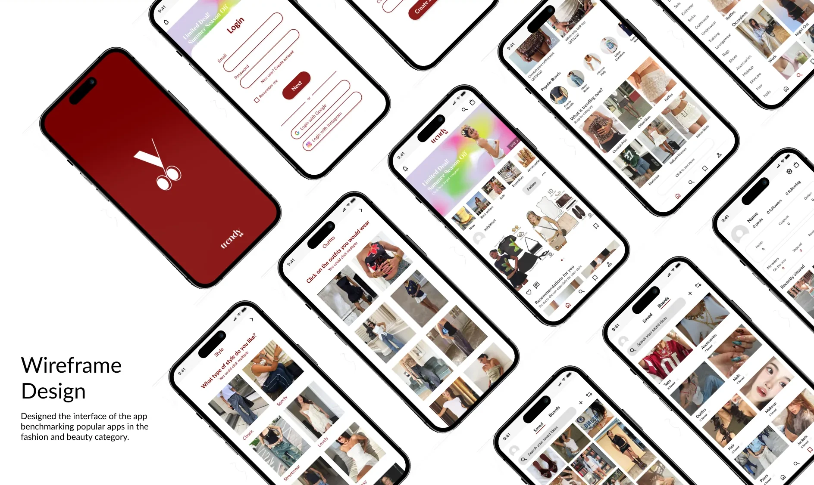